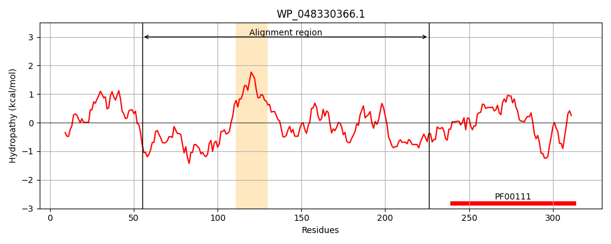
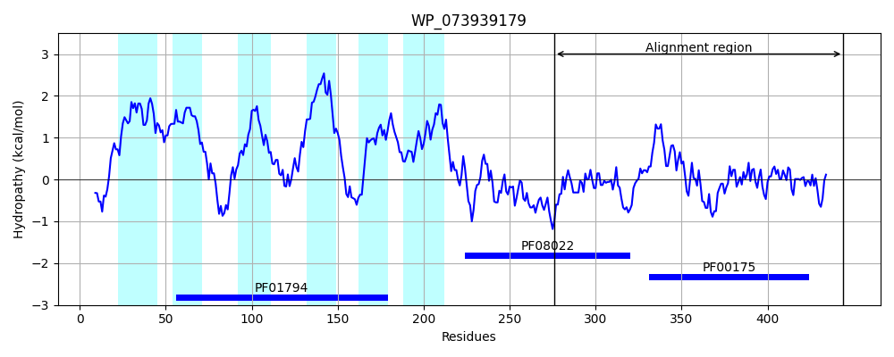
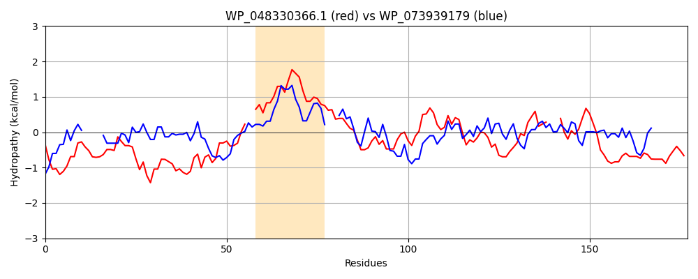

Hit Accession: WP_073939179
Hit TCID: 5.B.1.2.2
Hit Description: gnl|BL_ORD_ID|21415 gnl|TC-DB|WP_073939179.1|5.B.1.2.2 oxidoreductase [Streptomyces sp. TSRI0107]
Mach Len: 177
e:0.000001
Query TMS Count : 1
Hit TMS Count: 6
TMS-Overlap Score: 0.000000
Predicted Substrates:None
BLAST Alignment:
Score: 117 , Bit scores: 49 bits, E-value: 8.9e-07, Alignment length: 177, Percentage identity: 27
Query: 55 YSLCGTPDRSNTYEICVRLTDASTGGSRYLHQQLKPGDRLAISPPRNHFPLPEAGR--YLLFAGGIGITPLLAMAEAIAARKGALELHYYVASSRQTAFSPRLTQLAAGGTVAIHCSEEGASFRQRIPACLTTPDPDTA---VVACGPEGFIQRLQSVMEEYRWSPSQFVFERFTPA 226
+SL PD +RLT + G ++L+ G R+ P F R +L AGG+G+TP+ A+ E + G + + VA+ R L +LA ++ + + PA L PD A V CGP G ++ + E Q FERF+ A
Sbjct: 276 FSLSAAPDGRT-----LRLTVKAAGDGSAALRRLQVGTRVFAEGPYGAFTTMRRTRPDAVLVAGGVGVTPIRALLEEL---HGHAVVIHRVATERDAVLHDELRELAHAKGAELYLVTGPVTPDKLSPAELARLVPDIADRDVYLCGPPGMTAAVRRSLRELGVPAPQIHFERFSLA 444 | Protein Hydropathy Plots: |
|---|
|  |  |
Pairwise Alignment-Hydropathy Plot:
|
|---|
|  |